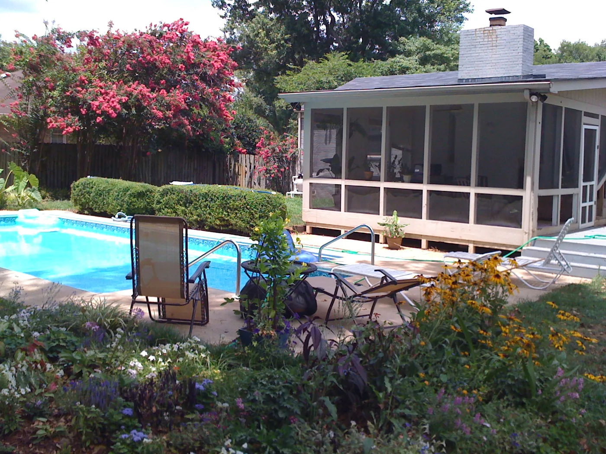

Blog · February 3, 2010
Ladies and Gentlemen
About a year ago I moved into the lovely house I still call home. Three days after I unpack, in comes another new mate. Suddenly, I live with two guys.
I cordially invite you to my musings about life with these men.
First, let me introduce you to the other two thirds of Chadwell House: Ben and Daniel. Benny owns the house and Izzy, our crazy Weimaraner. He brokers corporate insurance and co-hosts our pool parties with me. Daniel plays pro baseball for Germany. He’s been in Huntsville for the off season and heads back in a month.
1. There is no such thing as “your” beer, or vodka, or cognac. Think community supply.
2. Three foods Always in stock: peanut butter, spagetti, milk.
3. “clean up” = put in sink.
4. Four different girls in one week is no longer an anomaly. And if you’re still up at 4am after a night out, better turn up the music to drown out a different kind of singing.
5. “Handyman” is shenanigans. Ad asking for help? Doubt it. Case in point: last winter we didn’t turn on the fireplace once. Ben thought it was broken. Turns out he just didn’t know how to light the pilot.
6. ESPN and HBO might as well be the only channels.
7. Sarcasm, lightheartedness, and laughs are a dime a dozen. Drama is virtually non-existant. My perception of “lewd” has been drastically modified; in stead of responding with “dear God..animals!” when I hear guy to guy exposés I can usually laugh along. Bypassing shock lets me see the entertainment value.
Ben and Daniel are both great frends, they’re like the big brothers I never had. Crude, hilarious, wild and strange, the world of men will always be somewhat of a mystery to me. Living with you two has really opened my eyes to what I can see when I’m beyond passing judgement. Love y’all!
Kid Sis A


First published on my old blog, amyrobinson.wordpress.com, February 3, 2010.